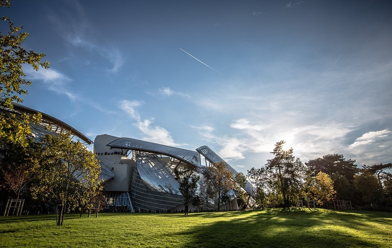
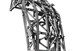
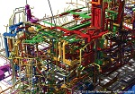
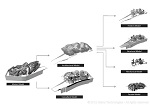

Project Details
Client: Fondation Louis Vuitton
Location: Paris France, Bois du Boulogne
Type: Museum
Size: 69,965 sf
Team: Gehry Partners, RFR/TESS,Studios Architecture, SETEC
Description:
The Fondation Louis Vuitton is a new contemporary art facility designed by Gehry Partners that will serve a museum and event venue.
Highlights:
- Implemented a common platform for design, engineering and construction for a global team of over 200 people
- Rationalization of the façade components to meet fabrication, construction, and installation constraints
- Parametric and generative detailing of thousands of non-standard mechanical connections
- Construction simulation and scheduling
- Recipient of the 2012 AIA Technology and Architectural Practice BIM Award.